pacotes <- c("abjData", "broom", "car", "fixest", "report")
install.packages(pacotes)Regressão linear
Introdução
A regressão linear é uma técnica estatística que busca modelar a relação entre uma variável dependente e uma ou mais variáveis independentes. A regressão linear simples é utilizada quando temos apenas uma variável independente, enquanto a regressão linear múltipla é utilizada quando temos mais de uma variável independente.
Nesta aula, exploraremos:
Como ajustar um modelo de regressão linear simples e múltipla no R.
Como extrair informações sobre o modelo ajustado.
Como visualizar o ajuste do modelo.
Como verificar os pressupostos da regressão linear.
Como extrair tabelas de regressão para apresentação dos resultados.
Aviso
O objetivo desta aula não é aprofundar nos conceitos teóricos da regressão linear, mas sim apresentar como ajustar e explorar funções que permitem ajustar modelos de regressão linear no R. Caso você tenha dúvidas sobre os conceitos teóricos, consulte os materiais sugeridos no final desta aula.
Instalando pacotes
Para esta aula, utilizaremos alguns pacotes do R, que talvez não tenham sido instalados anteriormente:
Carregando pacotes
Vamos carregar o pacote {ggplot2}, que utilizamos anteriormente para elaborar gráficos:
library(ggplot2)O comando abaixo desabilita a notação científica no R, o que facilita a leitura dos resultados:
options(scipen = 999) Importando os dados
Nesta aula, utilizaremos os dados do Programa das Nações Unidas para o Desenvolvimento (PNUD) sobre o Índice de Desenvolvimento Humano Municipal (IDHM) e suas dimensões para os municípios brasileiros em 2010. Esses dados estão disponíveis no pacote abjData.
Vamos filtrar os dados mais recentes disponíveis (censo de 2010) e salvar em um objeto chamado pnud_muni_2010:
pnud_muni_2010 <- abjData::pnud_muni |>
dplyr::filter(ano == 2010) Obs: O pacote abjData contém dados do PNUD para os anos de 1991, 2000 e 2010. Utilizamos apenas os dados de 2010 nesta aula, pois os dados não são independentes entre si. Se quisermos ajustar um modelo com dados de diferentes anos, seria necessário ajustar um modelo longitudinal (em painel), o que foge do escopo desta aula.
Dicionário dos dados
A tabela pnud_muni_2010 contém muitas variáveis, e alguns nomes não são muito descritivos. Podemos consultar o significado de cada variável consultando a tabela pnud_siglas do pacote {abjData}:
nomes_col_pnud_muni_2010 <- abjData::pnud_siglas |>
dplyr::filter(sigla %in% names(pnud_muni_2010))
nomes_col_pnud_muni_2010 |>
DT::datatable()Pergunta a ser explorada
Queremos explorar a seguinte pergunta: Dentre as variáveis a seguir, qual explica mais a mortalidade infantil? - t_agua: Percentual da população que vive em domicílios com água encanada. - rdpc: Renda per capita.
nomes_col_pnud_muni_2010 |>
dplyr::filter(sigla %in% c("mort5", "t_agua", "rdpc")) |>
knitr::kable()| sigla | nome_curto | nome_longo | definicao |
|---|---|---|---|
| mort5 | Mortalidade até 5 anos de idade | Mortalidade até cinco anos de idade | Probabilidade de morrer entre o nascimento e a idade exata de 5 anos, por 1000 crianças nascidas vivas. |
| rdpc | Renda per capita | Renda per capita média | Razão entre o somatório da renda de todos os indivíduos residentes em domicílios particulares permanentes e o número total desses indivíduos. Valores em reais de 01/agosto de 2010. |
| t_agua | % da população em domicílios com água encanada | Percentual da população que vive em domicílios com água encanada | Razão entre a população que vive em domicílios particulares permanentes com água canalizada para um ou mais cômodos e a população total residente em domicílios particulares permanentes multiplicado por 100. A água pode ser proveniente de rede geral, de poço, de nascente ou de reservatório abastecido por água das chuvas ou carro-pipa. |
Regressão linear simples
Existem várias maneiras de ajustar um modelo de regressão linear no R: podemos usar funções do R base, ou funções de outros pacotes, como o {fixest}.
Vamos ajustar um modelo de regressão linear simples utilizando a função função lm(), do R base.
Uma primeira variável que podemos explorar é o acesso à água encanada.
Vamos ajustar um modelo de regressão linear simples para investigar a relação entre a taxa de mortalidade infantil (até 5 anos de idade) (mort5) e o percentual da população que vive em domicílios com água encanada (t_agua) nos municípios brasileiros em 2010.
Então, temos que:
Variável dependente (
y):mort5Variável independente (
x):t_agua
Visualizando a relação entre as variáveis
Primeiramente, podemos visualizar a relação entre as variáveis. Caso você não lembre como fazer isso, consulte a aula sobre visualização de dados.
pnud_muni_2010 |>
ggplot() +
aes(x = t_agua, y = mort5) +
geom_point(alpha = 0.5) +
theme_light()- 1
-
Utilizamos os dados do objeto
pnud_muni_2010. - 2
- Iniciamos um gráfico.
- 3
-
Definimos as variáveis
xey. - 4
-
Adicionamos a geometria de pontos ao gráfico. O argumento
alpha = 0.5define a transparência dos pontos em 50%.
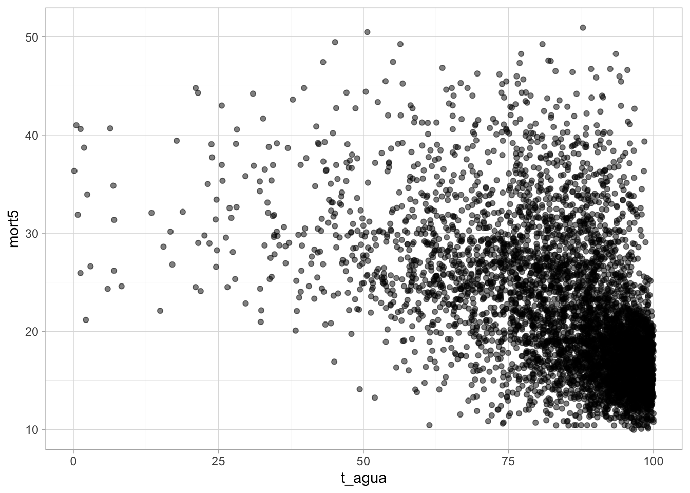
Ajustando o modelo
Uma maneira é usar a função lm(), de linear model (modelo linear), para ajustar o modelo de regressão linear simples. Essa função recebe como argumentos a fórmula do modelo (y ~ x, lê-se y em função de x) e os dados (argumento data).
modelo_linear <- lm(mort5 ~ t_agua, data = pnud_muni_2010)Explorando o modelo ajustado
Podemos explorar o resultado do modelo ajustado de várias formas!
A função summary() nos fornece um resumo do modelo ajustado:
summary(modelo_linear)
Call:
lm(formula = mort5 ~ t_agua, data = pnud_muni_2010)
Residuals:
Min 1Q Median 3Q Max
-22.495 -4.023 -1.222 2.693 29.999
Coefficients:
Estimate Std. Error t value Pr(>|t|)
(Intercept) 44.232115 0.489983 90.27 <0.0000000000000002 ***
t_agua -0.265179 0.005641 -47.01 <0.0000000000000002 ***
---
Signif. codes: 0 '***' 0.001 '**' 0.01 '*' 0.05 '.' 0.1 ' ' 1
Residual standard error: 6.195 on 5563 degrees of freedom
Multiple R-squared: 0.2843, Adjusted R-squared: 0.2841
F-statistic: 2210 on 1 and 5563 DF, p-value: < 0.00000000000000022Podemos extrair uma tibble com informações sobre o modelo ajustado utilizando as funções tidy() e glance() do pacote {broom}. A função broom::tidy() nos fornece informações sobre os coeficientes do modelo ajustado.
broom::tidy(modelo_linear) |>
knitr::kable()| term | estimate | std.error | statistic | p.value |
|---|---|---|---|---|
| (Intercept) | 44.2321150 | 0.4899828 | 90.27279 | 0 |
| t_agua | -0.2651793 | 0.0056414 | -47.00575 | 0 |
Os resultados da função broom::glance() são relativos ao ajuste do modelo, sendo útil para comparar diferentes modelos.
broom::glance(modelo_linear)|>
knitr::kable()| r.squared | adj.r.squared | sigma | statistic | p.value | df | logLik | AIC | BIC | deviance | df.residual | nobs |
|---|---|---|---|---|---|---|---|---|---|---|---|
| 0.2842752 | 0.2841465 | 6.194827 | 2209.541 | 0 | 1 | -18044.36 | 36094.73 | 36114.6 | 213485 | 5563 | 5565 |
A função report::report() nos fornece um relatório completo sobre o modelo ajustado:
report::report(modelo_linear) We fitted a linear model (estimated using OLS) to predict mort5 with t_agua
(formula: mort5 ~ t_agua). The model explains a statistically significant and
substantial proportion of variance (R2 = 0.28, F(1, 5563) = 2209.54, p < .001,
adj. R2 = 0.28). The model's intercept, corresponding to t_agua = 0, is at
44.23 (95% CI [43.27, 45.19], t(5563) = 90.27, p < .001). Within this model:
- The effect of t agua is statistically significant and negative (beta = -0.27,
95% CI [-0.28, -0.25], t(5563) = -47.01, p < .001; Std. beta = -0.53, 95% CI
[-0.56, -0.51])
Standardized parameters were obtained by fitting the model on a standardized
version of the dataset. 95% Confidence Intervals (CIs) and p-values were
computed using a Wald t-distribution approximation.Interpretação dos resultados
A equação ajustada é:
\[
mort5 = 44.23 - 0.27 \times tagua
\] - Interpretação do Coeficiente de t_agua: Para cada aumento de 1% no percentual de água encanada, espera-se uma redução de 0.27 na taxa de mortalidade infantil (por 1000 nascidos vivos).
Interpretação do Intercepto: Se o percentual de água encanada fosse 0, a mortalidade infantil seria de 44.23 por 1000 nascidos vivos. Este valor pode não ser relevante na prática, mas é útil para entender o comportamento do modelo.
R²: O valor de ( R^2 = 0.28 ) significa que cerca de 28% da variação na taxa de mortalidade infantil (
mort5) é explicada pela variação no percentual de acesso à água encanada (t_agua).Significância: O p-valor muito pequeno (p < 0.001) indica que o acesso à água encanada tem uma relação estatisticamente significativa com a mortalidade infantil.
Significância do p-valor: O p-valor muito baixo (< 0.001) indica que há evidência de que existe uma relação estatisticamente significativa entre o percentual de água encanada e a mortalidade infantil.
Visualizando o ajuste do modelo
Para adicionar a linha de regressão ao gráfico anterior, podemos criar uma nova tabela com as predições do modelo linear e os resíduos:
pnud_muni_2010_adjusted <- pnud_muni_2010 |>
dplyr::mutate(
valores_ajustados = predict(modelo_linear),
residuos = mort5 - valores_ajustados
) - 1
-
Adiciona uma nova coluna chamada
valores_ajustadosao data.frame contendo as predições do modelo linear, utilizando a funçãopredict(). - 2
-
Adiciona uma nova coluna chamada
residuosao data.frame contendo os resíduos do modelo linear: a diferença entre os valores reais (mort5) e os valores previstos pelo modelo.
Agora, podemos adicionar a linha de regressão ao gráfico anterior:
pnud_muni_2010_adjusted |>
ggplot() +
aes(x = t_agua, y = mort5) +
geom_point(alpha = 0.5) +
geom_line(aes(y = valores_ajustados), color = "blue", linewidth = 1) +
theme_light()- 1
- Adiciona a linha de regressão com base nas predições do modelo.
geom_smooth()
A função geom_smooth() do pacote {ggplot2} também pode ser utilizada para adicionar uma linha de regressão ao gráfico.
No entanto, a função geom_smooth() não utiliza as predições do modelo linear que ajustamos, e sim realiza um ajuste (utilizando alguns métodos que podem ser consultados na documentação):
pnud_muni_2010 |>
ggplot() +
aes(x = t_agua, y = mort5) +
geom_point(alpha = 0.5) +
geom_smooth(method = "lm", se = FALSE, color = "blue") +
theme_light()`geom_smooth()` using formula = 'y ~ x'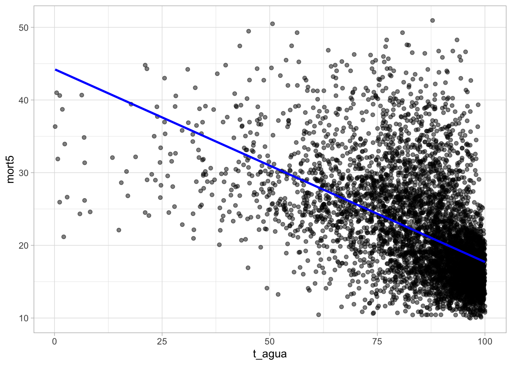
Pressupostos da Regressão Linear
Agora que sabemos ajustar um modelo de regressão linear simples, é importante verificar se os pressupostos da regressão linear estão sendo respeitados.
- Linearidade: A relação entre a variável dependente e a(s) variável(is) independente(s) deve ser linear.
- Independência dos Erros: Os erros devem ser independentes uns dos outros. Não queremos que eles tenham uma ordem ou relação com as variáveis independentes.
- Homoscedasticidade: A variância dos erros deve ser constante ao longo de todos os níveis da variável independente.
- Normalidade dos Erros: Os erros devem seguir uma distribuição normal.
Podemos verificar esses pressupostos utilizando gráficos de diagnóstico, que discutiremos em breve.
Diagnóstico de Modelos
Utilizar gráficos de diagnóstico ajuda a verificar se os pressupostos do modelo estão sendo respeitados. Vamos explorar alguns gráficos de diagnóstico, que são úteis para tomar decisões sobre o modelo!
Histograma dos resíduos
Para que os pressupostos sejam satisfeitos, espera-se uma uma distribuição simétrica e aproximadamente normal.
A curva de densidade adicionada ao histograma permite verificar visualmente se os resíduos seguem uma distribuição normal. Se a curva de densidade não se parecer com uma curva gaussiana, isso pode ser um indicativo de que os resíduos não são normalmente distribuídos, violando um dos pressupostos da regressão linear.
pnud_muni_2010_adjusted |>
ggplot(aes(x = residuos)) +
geom_histogram(
aes(y = after_stat(density)),
fill = "lightblue"
) +
geom_density() +
theme_light()- 1
- Utilizando os dados que contém os resíduos do modelo ajustado.
- 2
-
Iniciando o gráfico, e definindo a variável
xcomo os resíduos. - 3
- Adicionando a geometria de histograma.
- 4
-
Nos atributos estéticos (
aes()), definimos que o eixoydo histograma será a densidade dos resíduos. Quando criamos um histograma, os valores padrão no eixo y correspondem à contagem de observações em cada intervalo (bin). Ao utilizarafter_stat(density), estamos instruindo oggplot2a calcular a densidade ao invés da contagem bruta. - 5
- Definindo a cor de preenchimento do histograma.
- 6
- Adicionando a geometria de densidade.
- 7
-
Aplicando o tema
theme_light()ao gráfico.
`stat_bin()` using `bins = 30`. Pick better value with `binwidth`.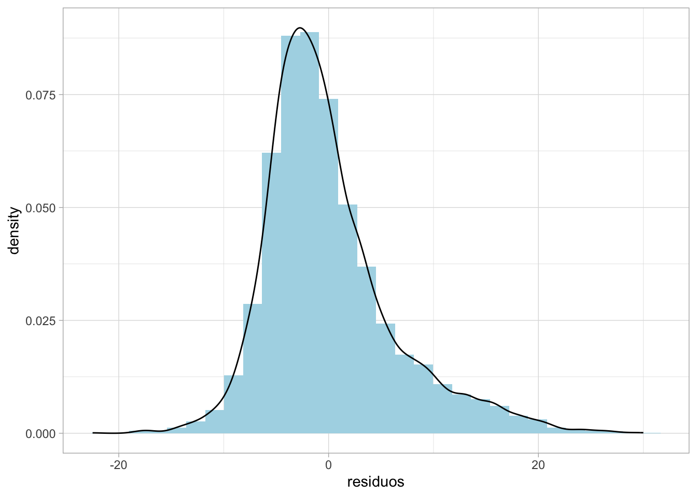
Gráfico de resíduos vs valores ajustados
Para que os pressupostos sejam satisfeitos, os pontos devem estar distribuídos aleatoriamente em torno de zero. Se houver um padrão nos resíduos, pode indicar que a relação entre as variáveis não é linear.
A interpretação do gráfico a seguir é de que talvez o modelo linear não seja o mais adequado para ajustar esses dados, pois os resíduos não estão distribuídos aleatoriamente.
car::residualPlot(modelo_linear)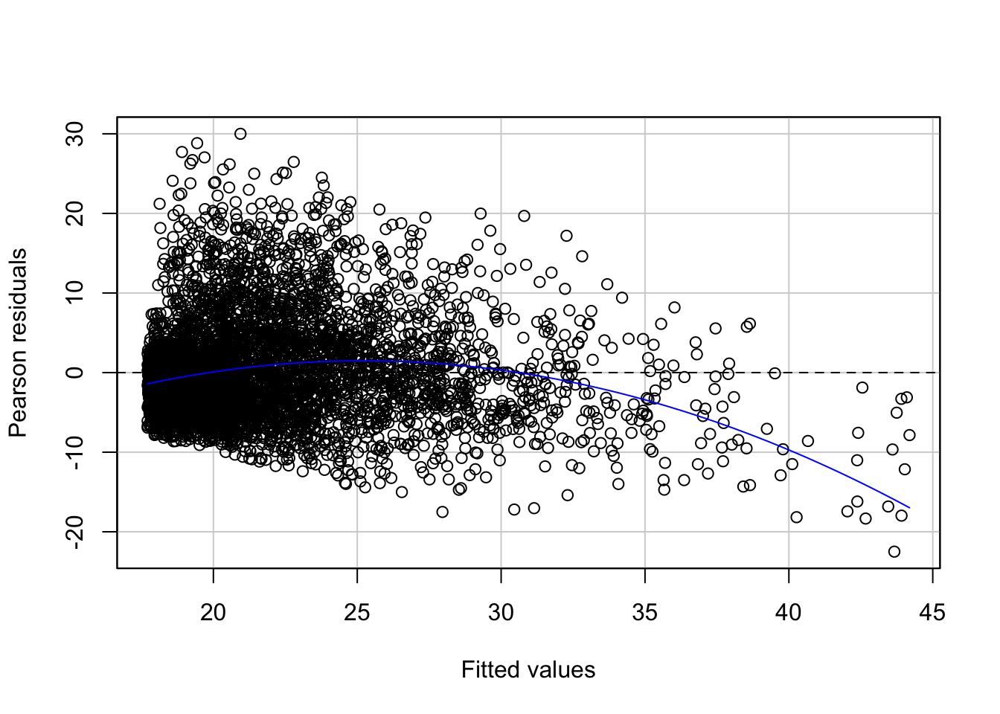
Teste de homocedasticidade
Para que os pressupostos sejam satisfeitos, espera-se que a variância dos erros seja constante ao longo de todos os níveis da variável independente. Para verificar isso, podemos utilizar a função car::ncvTest(), que testa a homocedasticidade dos resíduos.
Um p-valor muito pequeno (p < 0.001) sugere que os resíduos não possuem variância constante (heterocedasticidade), o que pode violar um dos pressupostos da regressão linear.
Neste modelo, o pressuposto de homocedasticidade não é satisfeito.
car::ncvTest(modelo_linear)Non-constant Variance Score Test
Variance formula: ~ fitted.values
Chisquare = 280.5612, Df = 1, p = < 0.000000000000000222Q-Q plot para normalidade dos resíduos
Para que os pressupostos sejam satisfeitos, os pontos devem seguir a linha reta, o que indicaria que os resíduos seguem uma distribuição normal. Desvios significativos da linha indicam que os resíduos não são normais.
No caso do exemplo a seguir, os resíduos não seguem uma distribuição normal.
car::qqPlot(modelo_linear)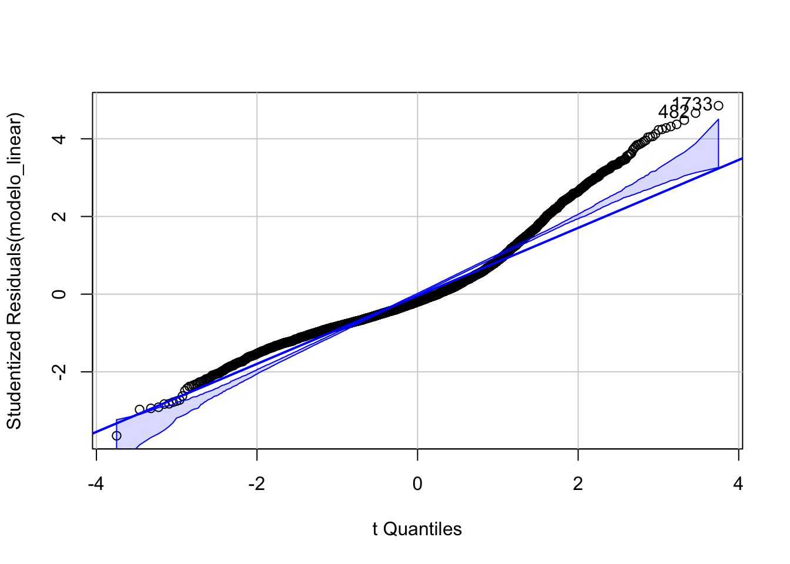
[1] 482 1733Extraindo tabelas de regressão
Podemos extrair tabelas de regressão para apresentar os resultados do modelo ajustado.
Existem diversos pacotes que podem ser utilizados para extrair tabelas de regressão, como:
Vamos utilizar a função stargazer::stargazer(). Essa função pode gerar tabelas de regressão em diferentes formatos, como texto, HTML, LaTeX e Markdown.
stargazer::stargazer(modelo_linear, type = "text")
===============================================
Dependent variable:
---------------------------
mort5
-----------------------------------------------
t_agua -0.265***
(0.006)
Constant 44.232***
(0.490)
-----------------------------------------------
Observations 5,565
R2 0.284
Adjusted R2 0.284
Residual Std. Error 6.195 (df = 5563)
F Statistic 2,209.541*** (df = 1; 5563)
===============================================
Note: *p<0.1; **p<0.05; ***p<0.01Cuidado: observe que na última linha (Note: *p<0.1; **p<0.05; ***p<0.01) o resultado em HTML apresenta asteriscos a menos do que o resultado em texto. Isso ocorre porque o Markdown interpreta o asterisco como um comando de itálico (*) ou negrito (**) (e utilizamos Markdown para a construção deste site).
stargazer::stargazer(modelo_linear, type = "html")| Dependent variable: | |
| mort5 | |
| t_agua | -0.265*** |
| (0.006) | |
| Constant | 44.232*** |
| (0.490) | |
| Observations | 5,565 |
| R2 | 0.284 |
| Adjusted R2 | 0.284 |
| Residual Std. Error | 6.195 (df = 5563) |
| F Statistic | 2,209.541*** (df = 1; 5563) |
| Note: | p<0.1; p<0.05; p<0.01 |
Interpretação final
O modelo que ajustamos pode não ser o mais adequado para explicar a relação entre a taxa de mortalidade infantil e o percentual de acesso à água encanada, pois os pressupostos da regressão linear não foram atendidos. Pode ser necessário ajustar um modelo mais complexo.
A taxa de mortalidade infantil é influenciada por diversos fatores, e o acesso à água encanada pode ser apenas um deles. É interessante investigar se outras variáveis como renda, educação, saneamento básico, entre outras, são importantes para explicar a mortalidade infantil.
Regressão linear múltipla
Até agora, ajustamos um modelo de regressão linear simples. No entanto, é possível ajustar um modelo de regressão linear múltipla, que inclui mais de uma variável independente.
Na regressão linear múltipla, incluímos mais de uma variável independente para tentar capturar diferentes fatores que podem influenciar a variável dependente.
Quando ajustamos um modelo de regressão múltipla, estamos tentando entender como a variável dependente (por exemplo, mort5) é afetada por várias variáveis independentes (como t_agua e rdpc).
Adicionar variáveis pode melhorar a precisão do modelo, reduzindo o erro e aumentando o (R^2), que nos diz quanta variação na variável dependente é explicada pelas variáveis independentes.
Vamos ajustar um modelo de regressão linear múltipla para investigar a relação entre a taxa de mortalidade infantil (até 5 anos de idade) (mort5) e o percentual da população que vive em domicílios com água encanada (t_agua) e a renda per capita (rdpc) nos municípios brasileiros em 2010.
Então, temos que:
Variável dependente (
y):mort5Variáveis independentes (
x):t_aguaerdpc
Ajustando o modelo de regressão linear múltipla
Para ajustar um modelo de regressão linear múltipla, basta adicionar as variáveis independentes separadas por + na fórmula do modelo.
modelo_linear_multiplo <- lm(mort5 ~ t_agua + rdpc, data = pnud_muni_2010)Daqui em diante, o processo é semelhante ao que fizemos para o modelo de regressão linear simples.
Explorando o modelo ajustado
Podemos explorar o resultado do modelo ajustado com a função summary():
summary(modelo_linear_multiplo)
Call:
lm(formula = mort5 ~ t_agua + rdpc, data = pnud_muni_2010)
Residuals:
Min 1Q Median 3Q Max
-14.9472 -3.2528 -0.8473 2.1257 24.1132
Coefficients:
Estimate Std. Error t value Pr(>|t|)
(Intercept) 38.367673 0.395156 97.09 <0.0000000000000002 ***
t_agua -0.085605 0.005337 -16.04 <0.0000000000000002 ***
rdpc -0.019260 0.000323 -59.63 <0.0000000000000002 ***
---
Signif. codes: 0 '***' 0.001 '**' 0.01 '*' 0.05 '.' 0.1 ' ' 1
Residual standard error: 4.839 on 5562 degrees of freedom
Multiple R-squared: 0.5634, Adjusted R-squared: 0.5633
F-statistic: 3589 on 2 and 5562 DF, p-value: < 0.00000000000000022Visualizando o ajuste do modelo
A etapa de visualização do ajuste do modelo de regressão linear múltipla é um pouco mais complexa, pois estamos lidando com mais de uma variável independente.
Precisamos criar um gráfico para cada variável independente, mantendo as outras variáveis independentes constantes.
Para isso, primeiro vamos criar uma nova tabela com os valores constantes das variáveis independentes (utilizando a média):
pnud_muni_2010_ajustado_agua <- pnud_muni_2010 |>
dplyr::mutate(
rdpc = mean(rdpc)
)
pnud_muni_2010_ajustado_rdpc <- pnud_muni_2010 |>
dplyr::mutate(
t_agua = mean(t_agua)
)- 1
-
Criando uma nova tabela (
pnud_muni_2010_ajustado_agua), onde a variávelrdpcé constante, utilizando a média dos valores. - 2
-
Criando uma nova tabela (
pnud_muni_2010_ajustado_rdpc), onde a variávelt_aguaé constante, utilizando a média dos valores.
Agora, vamos criar uma nova tabela com os valores ajustados para cada uma das variáveis independentes constantes (utilizando os dados criados na etapa anterior no argumento newdata):
pnud_muni_2010_ajustado_multiplo <- pnud_muni_2010 |>
dplyr::mutate(
valores_ajustados_agua = predict(
modelo_linear_multiplo,
newdata = pnud_muni_2010_ajustado_agua
),
valores_ajustados_rdpc = predict(
modelo_linear_multiplo,
newdata = pnud_muni_2010_ajustado_rdpc
)
) - 1
-
Adicionando uma nova coluna chamada
valores_ajustados_aguaao data.frame contendo os ajustes do modelo linear múltiplo, utilizando a funçãopredict(), e os dadospnud_muni_2010_ajustado_agua(onde a variávelrdpcé constante). - 2
-
Adicionando uma nova coluna chamada
valores_ajustados_rdpcao data.frame contendo os ajustes do modelo linear múltiplo, utilizando a funçãopredict(), e os dadospnud_muni_2010_ajustado_rdpc(onde a variávelt_aguaé constante).
Agora, podemos criar os gráficos para visualizar o ajuste do modelo de regressão linear múltipla.
O gráfico a seguir mostra a relação entre a taxa de mortalidade infantil e o percentual de acesso à água encanada, mantendo as outras variáveis independentes constantes:
pnud_muni_2010_ajustado_multiplo |>
ggplot() +
geom_point(aes(x = t_agua, y = mort5), alpha = 0.5) +
geom_line(aes(x = t_agua, y = valores_ajustados_agua), color = "red") +
theme_light()- 1
-
Adicionando a geometria de pontos ao gráfico, com os valores de
t_aguano eixo x emort5no eixo y. - 2
- Adicionando a linha de regressão ao gráfico, com os valores ajustados (mantendo as outras variáveis independentes constantes).
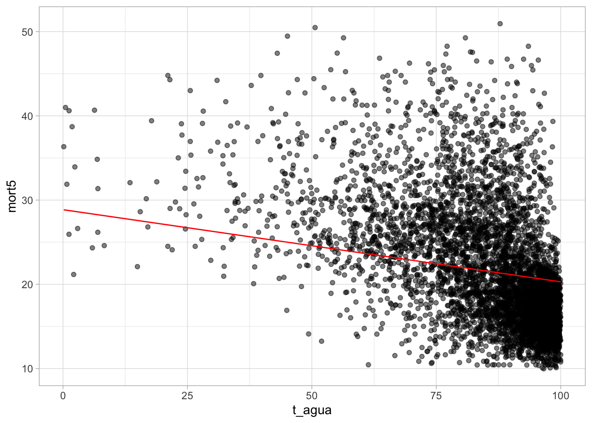
O gráfico a seguir mostra a relação entre a taxa de mortalidade infantil e a renda per capita, mantendo as outras variáveis independentes constantes:
pnud_muni_2010_ajustado_multiplo |>
ggplot() +
geom_point(aes(x = rdpc, y = mort5), alpha = 0.5) +
geom_line(aes(x = rdpc, y = valores_ajustados_rdpc), color = "red") +
theme_light() - 1
-
Adicionando a geometria de pontos ao gráfico, com os valores de
rdpcno eixo x emort5no eixo y.
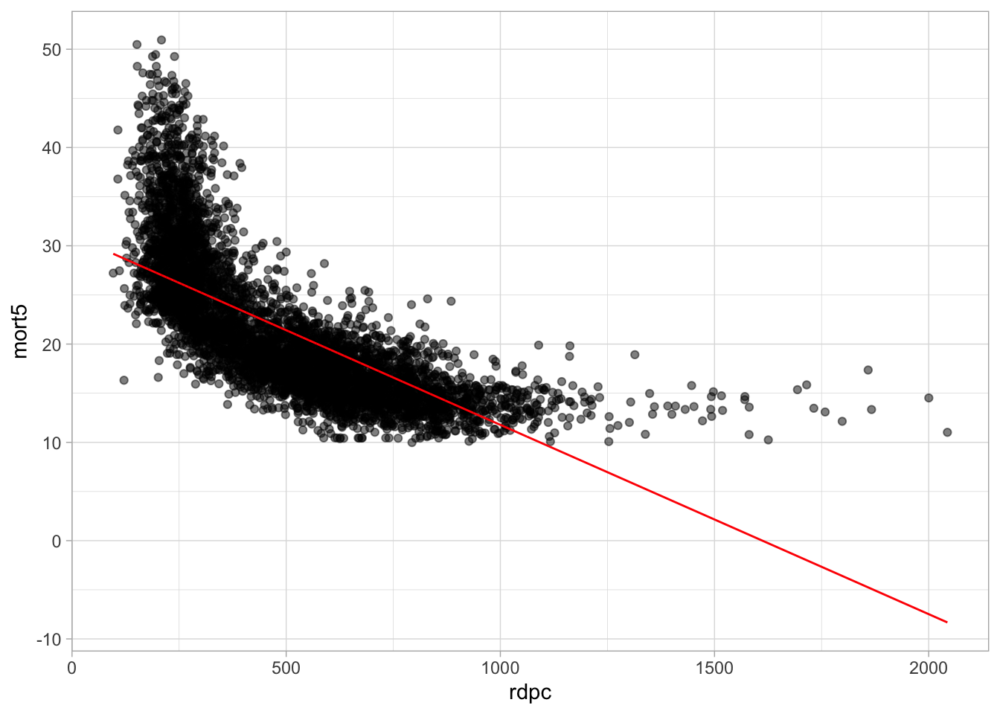
O gráfico acima indica que a relação entre rdpc e mort5 não é linear. Nesse caso, podemos tentar transformar a variável rdpc e testar novamente ajustar um modelo linear.
Vamos tentar ajustar um modelo de regressão linear múltipla com a variável rdpc transformada em logaritmo (log()).
Modelando a variável rdpc transformada em log()
Transformações em variáveis são usadas quando a relação entre as variáveis independentes e a dependente não é linear. No nosso exemplo, a relação entre rdpc e mort5 não é linear. Ao aplicar a transformação logarítmica à variável rdpc, tentamos “linearizar” a relação, o que pode melhorar a capacidade do modelo de capturar a verdadeira relação entre as variáveis.
Vamos ajustar um modelo de regressão linear múltipla com a variável rdpc transformada em logaritmo.
Para isso, primeiro vamos criar uma nova variável rdpc_log com a transformação logarítmica da variável rdpc, e salvar em um novo objeto chamado pnud_muni_2010_com_log:
pnud_muni_2010_com_log <- pnud_muni_2010 |>
dplyr::mutate(rdpc_log = log(rdpc)) Agora, vamos ajustar um modelo de regressão linear múltipla com a variável rdpc_log:
modelo_linear_multiplo_log <- lm(mort5 ~ t_agua + rdpc_log,
data = pnud_muni_2010_com_log)Vamos explorar o resultado do modelo ajustado:
summary(modelo_linear_multiplo_log)
Call:
lm(formula = mort5 ~ t_agua + rdpc_log, data = pnud_muni_2010_com_log)
Residuals:
Min 1Q Median 3Q Max
-20.318 -2.828 -0.552 2.155 21.005
Coefficients:
Estimate Std. Error t value Pr(>|t|)
(Intercept) 92.320911 0.725668 127.222 < 0.0000000000000002 ***
t_agua -0.015457 0.005172 -2.988 0.00282 **
rdpc_log -11.425230 0.151703 -75.313 < 0.0000000000000002 ***
---
Signif. codes: 0 '***' 0.001 '**' 0.01 '*' 0.05 '.' 0.1 ' ' 1
Residual standard error: 4.359 on 5562 degrees of freedom
Multiple R-squared: 0.6456, Adjusted R-squared: 0.6455
F-statistic: 5067 on 2 and 5562 DF, p-value: < 0.00000000000000022Visualizando o ajuste do modelo
Vamos visualizar o ajuste do modelo (similar ao que fizemos anteriormente). Para isso, vamos criar uma nova tabela com os valores constantes das variáveis independentes (utilizando a média):
pnud_muni_2010_ajustado_agua_log <- pnud_muni_2010_com_log |>
dplyr::mutate(
rdpc_log = mean(rdpc_log),
)
pnud_muni_2010_ajustado_rdpc_log <- pnud_muni_2010_com_log |>
dplyr::mutate(
t_agua = mean(t_agua)
)- 1
-
Criando uma nova tabela (
pnud_muni_2010_ajustado_agua), onde a variável érdpc_logconstante, utilizando a média dos valores. - 2
-
Criando uma nova tabela (
pnud_muni_2010_ajustado_rdpc), onde a variável ét_aguaconstante, utilizando a média dos valores.
Podemos criar uma nova tabela com os valores ajustados para cada uma das variáveis independentes constantes (utilizando os dados criados na etapa anterior no argumento newdata):
pnud_muni_2010_ajustado_multiplo_log <- pnud_muni_2010_com_log |>
dplyr::mutate(
valores_ajustados_agua = predict(
modelo_linear_multiplo_log,
newdata = pnud_muni_2010_ajustado_agua_log),
valores_ajustados_rdpc = predict(
modelo_linear_multiplo_log,
newdata = pnud_muni_2010_ajustado_rdpc_log),
valores_ajustados = predict(modelo_linear_multiplo_log),
residuos = mort5 - valores_ajustados
) - 1
-
Adicionando uma nova coluna chamada
valores_ajustados_aguaao data.frame contendo os ajustes do modelo linear múltiplo, utilizando a funçãopredict(), e os dadospnud_muni_2010_ajustado_agua_log(onde a variávelrdpc_logé constante). - 2
-
Adicionando uma nova coluna chamada
valores_ajustados_rdpcao data.frame contendo os ajustes do modelo linear múltiplo, utilizando a funçãopredict(), e os dadospnud_muni_2010_ajustado_rdpc_log(onde a variávelt_aguaé constante). - 3
-
Adicionando uma nova coluna chamada
valores_ajustadosao data.frame contendo os ajustes do modelo linear múltiplo. - 4
-
Adicionando uma nova coluna chamada
residuosao data.frame contendo os resíduos do modelo linear: a diferença entre os valores reais (mort5) e os valores previstos pelo modelo.
Agora, vamos visualizar o ajuste do modelo de regressão linear múltipla com a variável rdpc transformada em logaritmo.
pnud_muni_2010_ajustado_multiplo_log |>
ggplot() +
geom_point(aes(x = t_agua, y = mort5), alpha = 0.5) +
geom_line(aes(x = t_agua, y = valores_ajustados_agua), color = "red") +
theme_light() 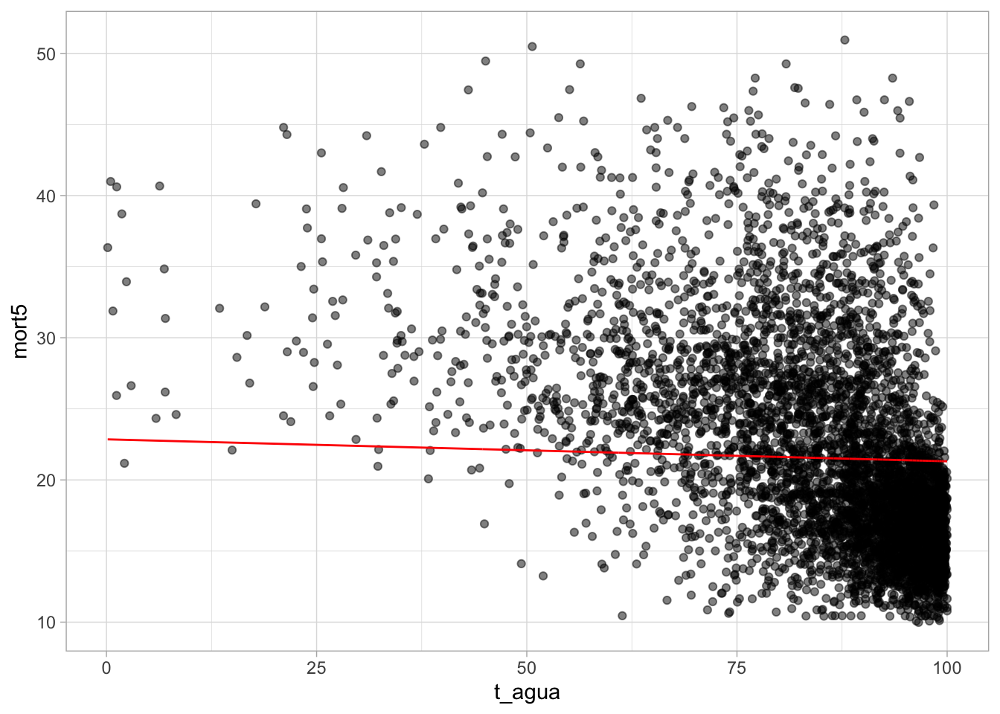
pnud_muni_2010_ajustado_multiplo_log |>
ggplot() +
geom_point(aes(x = rdpc_log, y = mort5), alpha = 0.5) +
geom_line(aes(x = rdpc_log, y = valores_ajustados_rdpc), color = "red") +
theme_light() 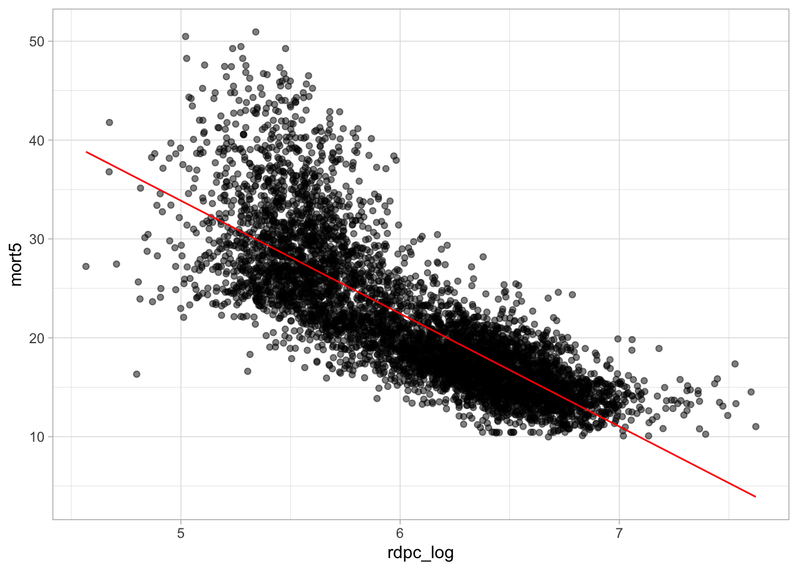
O segundo gráfico indica que o resultado do modelo ajustado com a variável rdpc transformada em logaritmo é melhor do que o modelo anterior. Vamos seguir com a análise do modelo ajustado.
Explorando o modelo ajustado
Podemos explorar o resultado do modelo ajustado com a função summary(), broom::tidy() e report::report():
report::report(modelo_linear_multiplo_log) We fitted a linear model (estimated using OLS) to predict mort5 with t_agua and
rdpc_log (formula: mort5 ~ t_agua + rdpc_log). The model explains a
statistically significant and substantial proportion of variance (R2 = 0.65,
F(2, 5562) = 5067.02, p < .001, adj. R2 = 0.65). The model's intercept,
corresponding to t_agua = 0 and rdpc_log = 0, is at 92.32 (95% CI [90.90,
93.74], t(5562) = 127.22, p < .001). Within this model:
- The effect of t agua is statistically significant and negative (beta = -0.02,
95% CI [-0.03, -5.32e-03], t(5562) = -2.99, p = 0.003; Std. beta = -0.03, 95%
CI [-0.05, -0.01])
- The effect of rdpc log is statistically significant and negative (beta =
-11.43, 95% CI [-11.72, -11.13], t(5562) = -75.31, p < .001; Std. beta = -0.78,
95% CI [-0.80, -0.76])
Standardized parameters were obtained by fitting the model on a standardized
version of the dataset. 95% Confidence Intervals (CIs) and p-values were
computed using a Wald t-distribution approximation.broom::tidy(modelo_linear_multiplo_log) |>
knitr::kable()| term | estimate | std.error | statistic | p.value |
|---|---|---|---|---|
| (Intercept) | 92.3209109 | 0.7256681 | 127.221954 | 0.0000000 |
| t_agua | -0.0154565 | 0.0051725 | -2.988236 | 0.0028182 |
| rdpc_log | -11.4252299 | 0.1517033 | -75.312971 | 0.0000000 |
Diagnóstico do Modelo de Regressão Múltipla
Os diagnósticos do modelo de regressão múltipla são similares aos da regressão simples, mas é importante prestar mais atenção nos resíduos, pois agora temos mais de uma variável explicativa.
Os mesmos pressupostos de linearidade, independência dos erros, homocedasticidade e normalidade dos resíduos precisam ser verificados.
Histograma dos resíduos
pnud_muni_2010_ajustado_multiplo_log |>
ggplot(aes(x = residuos)) +
geom_histogram(
aes(y = after_stat(density)),
fill = "lightblue"
) +
geom_density() +
theme_light()`stat_bin()` using `bins = 30`. Pick better value with `binwidth`.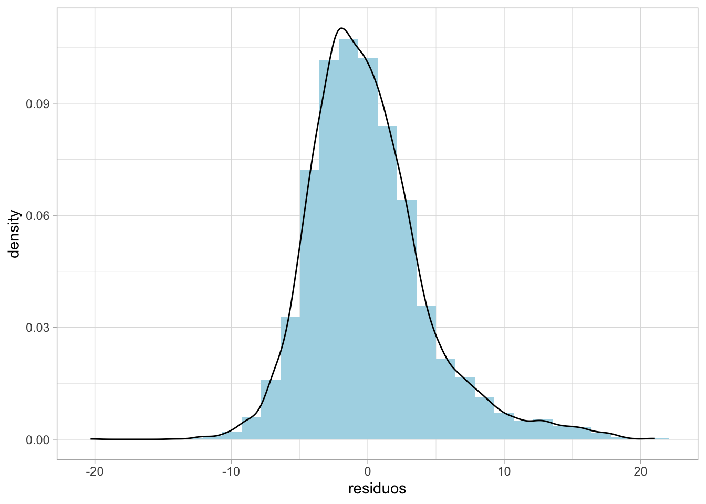
Gráfico de resíduos vs valores ajustados
É importante verificar se os resíduos estão distribuídos de forma aleatória. Se houver padrões, o modelo pode estar mal especificado.
car::residualPlot(modelo_linear_multiplo_log)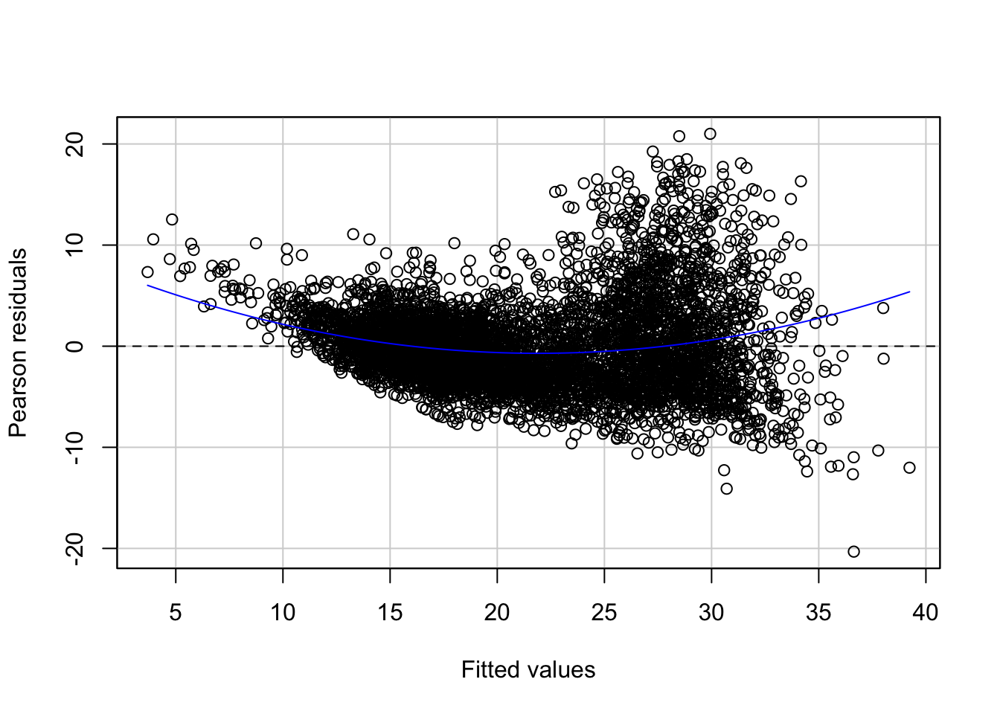
Teste de homocedasticidade
É importante verificar se a variância dos resíduos é constante ao longo dos valores ajustados.
car::ncvTest(modelo_linear_multiplo_log)Non-constant Variance Score Test
Variance formula: ~ fitted.values
Chisquare = 1154.345, Df = 1, p = < 0.000000000000000222Q-Q plot para normalidade dos resíduos
É importante verificar a normalidade dos resíduos.
car::qqPlot(modelo_linear_multiplo_log)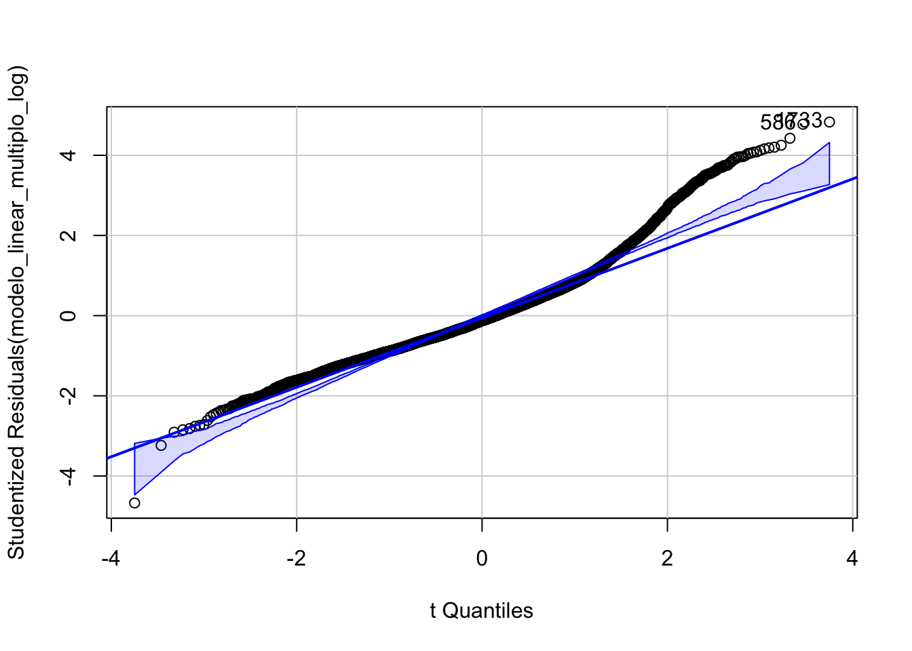
[1] 586 1733Extraindo tabelas de regressão
stargazer::stargazer(modelo_linear_multiplo_log, type = "text")
===============================================
Dependent variable:
---------------------------
mort5
-----------------------------------------------
t_agua -0.015***
(0.005)
rdpc_log -11.425***
(0.152)
Constant 92.321***
(0.726)
-----------------------------------------------
Observations 5,565
R2 0.646
Adjusted R2 0.646
Residual Std. Error 4.359 (df = 5562)
F Statistic 5,067.019*** (df = 2; 5562)
===============================================
Note: *p<0.1; **p<0.05; ***p<0.01Sugestões de exercícios
- Utilize os dados de 2010 do PNUD que já carregamos (
pnud_muni_2010). Ajuste um modelo de regressão linear simples para investigar a relação entre a taxa de mortalidade infantil (até 5 anos de idade) (mort5) e a renda per capita (rdpc), disponível nos dados.
Identifique qual é a variável dependente e qual é a variável independente.
Visualize a relação entre essas duas variáveis utilizando um gráfico de dispersão. Antes de ajustar o modelo, o que você espera encontrar? Parece haver uma relação linear entre as variáveis?
Ajuste um modelo de regressão linear simples.
Interprete o coeficiente da variável
rdpc.Após ajustar o modelo no exercício anterior, avalie se os pressupostos da regressão linear foram atendidos.
Verifique o valor de (R^2) e interprete seu significado.
O p-valor do coeficiente de
rdpcé significativo? O que isso indica sobre a relação entre essas variáveis?Crie um gráfico de dispersão entre as variáveis, adicionando uma linha de regressão ao gráfico.
Esse modelo é melhor para explicar a expectativa de vida do que o modelo anterior que ajustamos para a taxa de mortalidade infantil? Por quê?
Sugestões de materiais
- Livro Introduction to Modern Statistics de Mine Çetinkaya-Rundel e Johanna Hardin.
- Introduction to Econometrics with R - conteúdo mais avançado, para quem tem experiência em econometria.